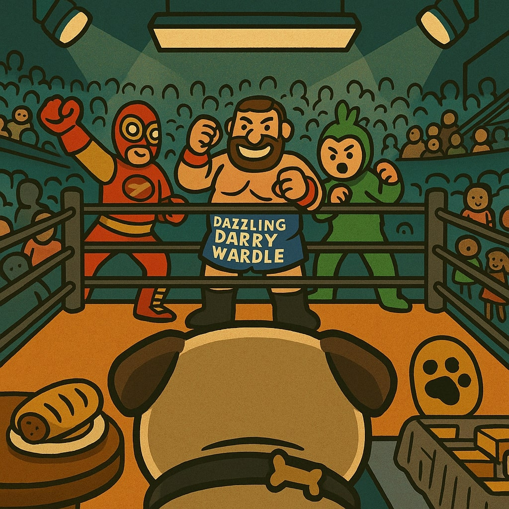

Percy – Head of Security
Once the infamous guardian of Wigan’s sacred pie vault, Percy was adopted after a legendary rooftop chase involving three seagulls, a hotdog van, and an empty box of custard tarts. He now runs Percy Security Enterprises with an iron paw, a velvet collar, and a custom-built command bunker shaped like a marrowbone. With over 200 events secured (and zero unsanctioned snack incidents on his watch), Percy brings decades of experience in pug-level perimeter defense. He has a deep, lifelong vendetta against ducks and once barked an entire anti-duck manifesto in Morse code. Hero. Icon. Absolute unit.
Pudding – Indoor Security
Hailing from the glittering ballrooms of Surrey’s royal pug dynasty, Pudding abandoned palace life after a dream told her to protect the soft furnishings of justice. She earned her stripes during the Velvet Cushion Wars of 2021 and completed advanced slipper-silence stealth training. She is a certified baby monitor, honorary lounge chair, and full-time vibe manager. Pudding has a longstanding rivalry with all cats and once expelled a Maine Coon using only a frown and a paw raise. Known for her hypnotic snore and disarming cuteness, Pudding ensures peace through poise — and pug power.
🎯 Careers at GravySlam
Do you have what it takes to join the most elite security and slam operations crew in the land?
Now Hiring: Gravy Dispenser Technician
Location: Ringside, every GravySlam event
Responsibilities: Maintain optimal gravy flow during live matches. Operate the mobile gravy cannon. Monitor sauce viscosity and ladle under pressure.
Requirements: Steady hands, strong ladle technique, no fear of splashback. Must be able to lift 12kg of hot stew overhead and smile while doing it.
Perks: Snack breaks monitored by Pudding, an exclusive staff cape, unlimited elbow drop training with Ham Drop Soup, and front-row seats at every slam.
📛 Staff ID Badges
Every member of the GravySlam crew receives a certified ID badge, complete with pug pawprint approval.
Percy – Security Commander
Pudding – Indoor Patrol Queen
🎥 Percy-Cam Surveillance Zone
See the arena from Percy’s eyes. Trained on suspicious sausage rolls, rogue toddlers, and misaligned gravy trays 24/7.
Captured during the infamous “Custard Tart Heist of 2024.” Suspects were lightly barked at and released.
🎒 Staff Tools & Equipment
- Ladle of Legend™ – wielded only by top-tier gravy techs
- Snack Scanner 3000 – detects rogue raisins from 12ft away
- Percy’s Pawlight – a tactical torch shaped like a marrowbone
- Pudding’s Puffy Vest – for elite indoor comfort and intimidation
- Emergency Elbow Pads – required for all backstage personnel